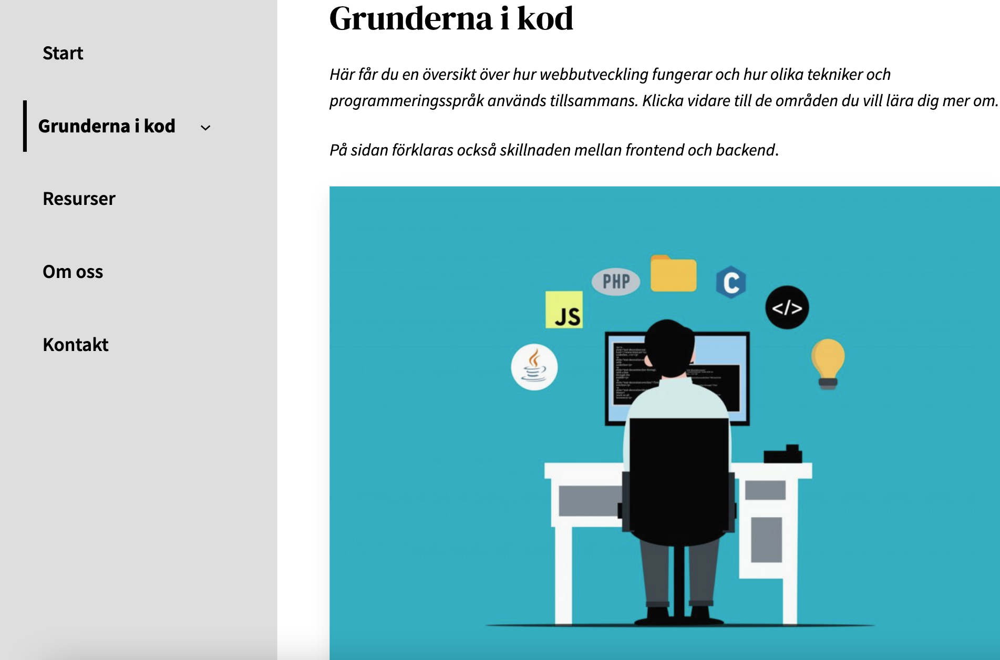
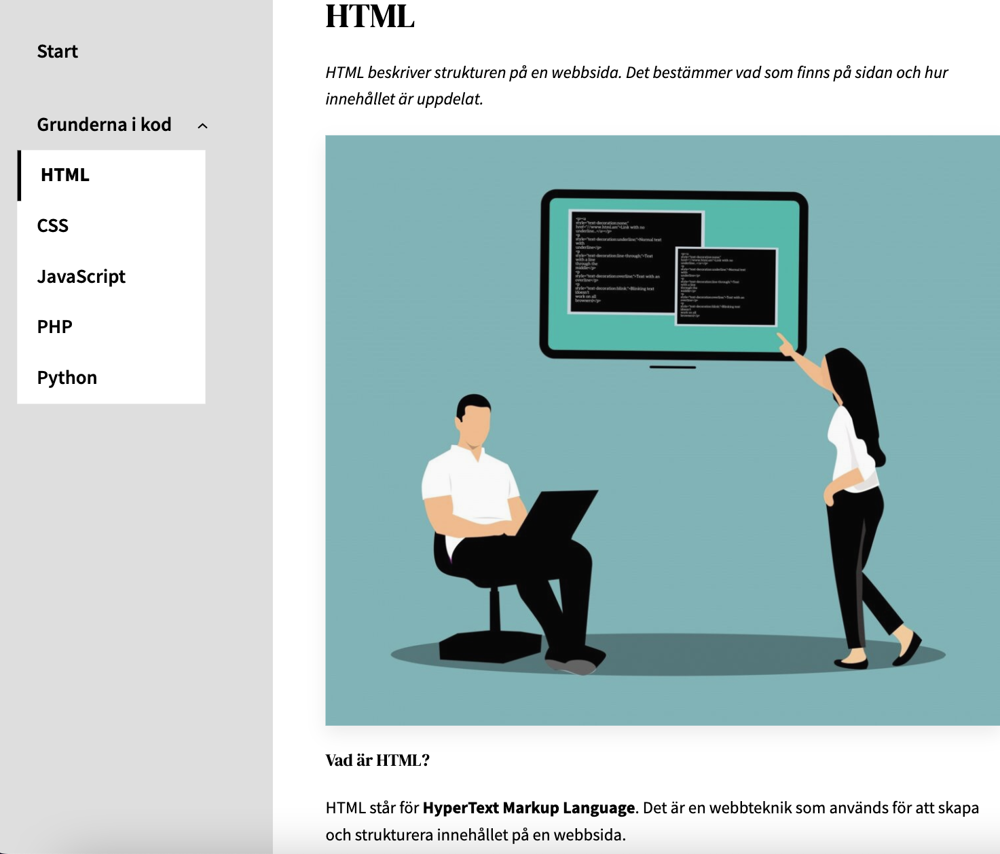

A beginner-friendly website built in WordPress, designed to make programming easier to approach through clear structure and guided navigation.
I created something I personally would have found helpful when starting out — a simple overview of how different technologies and programming languages fit together, without it feeling too technical or overwhelming.


I developed a clearer understanding of how frontend and backend work together, and how WordPress uses PHP and databases behind the scenes.
I also improved my ability to structure content and design navigation based on how users explore and understand information.